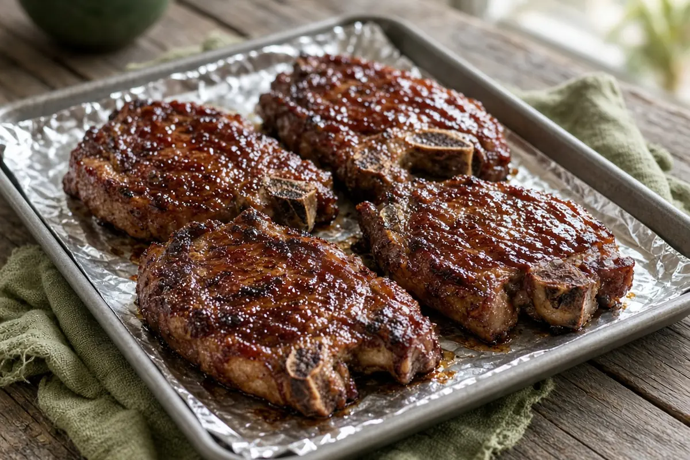

Oven-Baked BBQ Pork Steaks
Rubbed pork shoulder steaks baked low and long until tender, then brushed and baked with barbecue sauce until sticky.

Adapted from justapinch.com
5 servings
By
Yield: 5 servings
Prep:
Cook:
Total:
Difficulty: Medium
Ingredients
- 1 package pork steaks (about 5)
- 2 Tbsp dry bbq rub, plus more as needed
- 1 Tbsp garlic powder
- 1/2 tsp salt and pepper
- 1 bottle bbq sauce
- Nonstick spray
Instructions
- Heat the oven to 375°F. Line a rimmed sheet pan with foil and coat it with nonstick spray. Rub the bbq rub, garlic powder, and salt and pepper into both sides of each pork steak.
- Lay the steaks on the pan and bake 45 minutes.
- Turn the steaks and bake 45 minutes more.
- Spoon or baste off the extra grease. Brush the steaks with bbq sauce, turn them, and brush the other side.
- Bake 35 minutes more, until tender. Brush with more sauce and serve.
Notes: Pork steaks are cut from the shoulder, so they are well marbled and turn tender with the long bake. A turkey baster makes quick work of pulling off the grease.